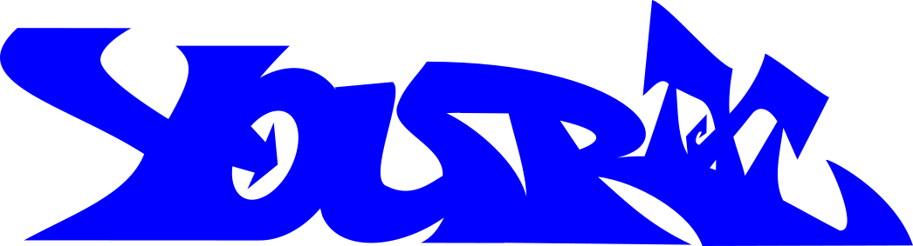

Welcome to
JUST EDGES
Indulge yourself with customs 3D graffiti figures and paintings!
How is it made?
01
Design - In this stage, the designer creates a virtual model of the product in a computer program, using 3D design tools.
02
Printing - Once the design is complete, the model is printed using a 3D printer.
03
Grinding - After the model is printed, it is necessary to remove the structure created during the printing process. This is done using sandpaper or a polisher.
04
Painting - Once the model is polished, we proceed to paint it. Depending on the order, we add details.
05
Varnishing - The final step is to coat the model with varnish to increase durability and provide a proper surface and finish.